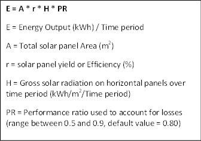
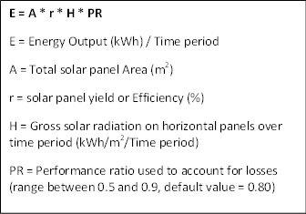

Data Sources
Solar Data Resources
EasySolarEstimator uses the Insolation Incident On A Horizontal Surface (kWh/m2/day) data set provided by the NASA Langley Research Center Atmospheric Science Data Center Surface meteorological and Solar Energy (SSE) web portal which is supported by the NASA LaRC POWER Project.
Geographic Data Resources
Easy Solar Estimator uses IP address geolocation provided by ipapi.co
Easy Solar Estimator uses browser geolocation lookup and geocoding services provided by Google APIs
Detailed Information
Goal
The goal of Easy Solar Estimator.site is to provide potential solar power users with very basic information about their locations' potential for solar power use. This data is intended to aid users in the very earliest stages of the solar power project planning process in order to help user's determine whether solar power is an option worth looking into.
Data Used
Dataset
The key solar dataset used in this project is obtained from the NASA Langley Research Center Atmospheric Science Data Center (LaRC) Surface Meteorological and Solar Energy (SSE) web portal supported by the NASA LaRC POWER (Prediction of Worldwide Energy Resource) Project.
The dataset in question consists of monthly and annual averaged values for a 22-year period (July 1983 - June 2005) for global horizontal radiation in terms of kWh/m2/day. This dataset in particular was chosen out of several available ones including Clear Sky Isolation GHI datasets as well as Direct Normal Irradiation (DNI) datasets. There were several reasons behind why this dataset in particular was determined to be the most appropriate one for our purposes;
Firstly, the global datasets available to us were all based upon satellite-derived data. Satellite based solar data is generally considered to be less accurate than high quality ground based observations. The level of bias between different types of solar data, however, have been shown to vary significantly with studies finding that DNI data is far more prone to bias or inaccuracy than GHI data – and that the amount of deviation between satellite and ground data becomes relatively minor if long term data is used[1]. This is supported by regression analysis done by the SSE project (using BSRN monthly averaged values) which found that Global GHI data sets only showed a bias rate of “-0.01%” and a root mean square of “10.25” , unlike Global DNI datasets which had rates of “-4.06” and “22.73” respectively[2].
Secondly, unlike clear sky isolation datasets this dataset accounts for weather conditions, adjusting values to correspond to actual solar irradiation reaching the ground. This allows us to avoid having to adjust the data to account for this factor ourselves.
Lastly, while both DNI and GHI data can be used to calculate the expected output of solar PV systems, a DNI data based approach would significantly complicate the model and go against the goal of simplification this project hopes to achieve. The reasons for this are covered in greater detail below.
The argument for using Solar GHI Data
We use GHI data with a parameter of Maximum Insolation Incident on a Horizontal Surface in our model. Much as the parameter title suggests this data allows us to account for all the irradiance a stationary horizontal solar panel with no degree of tilt would receive.
The key reason for our choice to build our model upon this data lies with the aforementioned impact other forms of data, such as DNI, would have on our goal of simplifying our model and minimizing required user input. To expand upon this, using DNI data to estimate solar PV system output forces us to use a more complicated model where panel tilt is accounted for. While this does lead to a more accurate model given most residential solar systems have a degree of tilt, and that a degree of tilt can improve solar panel efficiency by up to 20% in certain locations[3] there are already several free calculation tools which already serve this purpose and allow users to account for tilt. Additionally these available solar calculators require users to either choose a degree of tilt or approve the usage of a default value – a step which could prove to be a barrier to entry for many users. We would therefore relegate this step to a later stage in the solar planning process when more accurate information is required.
Solar PV system estimation data
Other sources of data we used include information for a specific solar panel we used to model output, a global formula we used to calculate the output of this specific panel, one source on solar panel degradation over time, and two sources on panel costs we used to estimate the cost of installing a solar PV system.
Panel used to model solar PV system output
We decided to use the Canadian Solar CS6U - 330M Panel for the purposes of our estimations. We obtained the specifications for the panel from a specification sheet provided by the manufacturer. We chose this panel in particular because of its similarity to the 315Wp Canadian Solar panel used in a study we refer to for the global equation we use to calculate solar PV system output[4]. This panel has a nominal maximum output of 330W, a module efficiency rate of 16.97%, an operating temperature range of -40°C to +85 °C, and a surface area of 1960 * 992 mm (1.94m2)[5].
Equation for solar PV system output
The equation we use to calculate expected output of the 330Wp panel listed above can be seen in figure 1. It is a global formula used to calculate the output of any solar PV system.[6] Of the listed values, the total panel area and efficiency are taken from the specifications quoted in the previous section, while a default value of 0.80 is used for the performance ratio. The gross solar radiation value, meanwhile is taken from the GHI dataset we are using with annual values calculated by multiplying the annual daily GHI average value by 365.25 and monthly values by the number of days in the month by average daily GHI values for the given month. The default value of 0.80 for Performance ratio we use, meanwhile, was decided upon by slightly adjusting the default value of 0.75 used by some sources[7] as losses due to weak radiation and weather have already been accounted for in our model in the dataset we are using for GHI values.
Degradation over time
It is well established that solar panels degrade and lose efficiency over time. Many solar panels have, for instance, 20-25 year guarantees which assure that the panel will remain at least 80-90 percent efficient over that period of time. Despite this guarantee, however, a 10-20% loss of efficiency is significant enough a factor that it must be accounted for in any long term solar PV profitability forecasts.
For the purposes of our model we assume that solar panels will degrade at a rate of 0.5% a year. We based this value upon a June 2012 analytical scholarly review of photovoltaic degradation rates. The review found that solar panels degraded at a median rate of 0.5% a year or at an average rate of 0.7-8 % a year[8] - with newer (post-2000) panels having significantly lower rates of degradation.
System costs
It is difficult to accurately estimate solar PV system prices, even if such an endeavor is limited to a single locality. For this reason of the three free online calculation tools we have previously mentioned, only Wholesalesolar.com (the providers of the off-grid solar calculator) offer a quote on solar PV system prices – and even then the quotes are limited to kits Wholesalesolar.com provides.
For the purposes of our rough estimation we have attempted to estimate a possible range of costs per watt of solar capacity rather than to provide any actual quote for a solar PV system. Additionally we have provided cost estimates before any potential taxes or subsidies and have left such considerations for the user to carry out at a later stage in the solar planning process.
The lower end of our cost estimation range is taken by finding a relatively popular, frequently purchased, and well-reviewed solar PV system DIY kit on amazon.com and dividing its cost by the capacity it offers to obtain a cost per watt of installed solar capacity. The system in question is the “Eco-Worthy 1200W Grid Tie Monocrystalline Solar Panel Kit”[9] which retails for $1,849. Dividing this cost by the 1200W of solar capacity the kit offers gives us a lower bound of $1.54 per watt of solar capacity.
The upper bound of our cost estimation range meanwhile is taken from a report by the National Renewable Energy Laboratory (NREL) which benchmarks average U.S. solar PV system costs in Q1 2017. This report found that the average cost of one watt of installed solar capacity in 2017 for a residential system was $2.80 per watt of DC or $3.22 per Watt of AC power. Of these two values we considered the fact that most home uses require AC power before deciding to use the higher value of $3.22 as our upper bound.
Geographic location information
Ipapi.co
This is a free online API which takes returns a JSON containing geographic location for whichever IP address is used to access it. It works by comparing users IP addresses against a GeoIP database. This is one of two resources we use to obtain geographic data. It returns information including but not limited to IP address, city, region, country, postal code, latitude, and longitude.
We are currently using a free account which allows for up to 1000 free daily uses. We have requested a free expanded account with 5000 daily uses.
Google APIs
This is a second free online API we are using. We are using it in two ways.
Firstly like with ipapi.co we are using the navigator function offered by this API to retrieve geographic information. If the user is using an older browser and permission is given this function returns latitude and longitude coordinates for their location. This function will not function without a SSL certificate in newer browsers, however, and therefore ipapi.co is defaulted to with newer browsers.
Secondly, we are using the reverse geocoding function offered by this API to retrieve certain geographic information (city, country, and address) for latitude and longitude coordinates input by the user or retrieved from the browser via the navigator function.
We are currently on a free plan for this API which allows for 2500 free request a day after which each 1000 requests are billed at $0.50/day.
  + "E = Energy Output (kWh) / Time period" +
 + "E = Energy Output (kWh) / Time period" +
+ "A = Total solar panel Area (m2)" +
+ "r = solar panel yield or Efficiency (%)" +
+ "H = Gross solar radiation on horizontal panels over time period (kWh/m2/Time period)" +
+ "PR = Performance ratio used to account for losses (range between 0.5 and 0.9, default value = 0.80)"'>
Works Cited
“Amazon.Com : ECO-WORTHY 1200W Grid Tie Monocrystalline Solar Panel Kit: 1200W 24V-110V MPPT Function Waterproof Grid-Tie Micro Power Inverter + 8pcs 160W Monocrystalline Solar Panels : Garden & Outdoor.” Accessed November 6, 2017. https://www.amazon.com/ECO-WORTHY-1200W-Monocrystalline-Solar-Panel/dp/B011918YV0/ref=sr_1_8?s=lawn-garden&ie=UTF8&qid=1509417102&sr=1-8&keywords=Grid+Tie&refinements=p_36%3A60000-99999999.
Anurag Swain. “Solar Energy Generation Potential on National Highways.” International Research Journal of Engineering and Technology (IRJET) 4, no. 9 (September 2017): 462–70.
“Comparison: Satellite-Based Data vs. Ground-Measured Data.” Accessed October 2, 2017. http://www.ammonit.com/en/wind-solar-wissen/solarmessung/474-comparison-satellite-based-ground-measured-data.
“How to Calculate the Output Energy or Power of a Solar Photovoltaic System, Excel PV Calculator to Estimate Solar Electricity Output.” Accessed October 30, 2017. http://photovoltaic-software.com/PV-solar-energy-calculation.php.
Jordan, Dirk C., and Sarah R. Kurtz. “Photovoltaic Degradation Rates—an Analytical Review.” Progress in Photovoltaics: Research and Applications 21, no. 1 (2013): 12–29.
“Maxpower (1500 V) CS6U-325|330|335|340M Datasheet.” CanadianSolar. Accessed November 5, 2017. https://www.canadiansolar.com/fileadmin/user_upload/downloads/datasheets/v5.5/Canadian_Solar-Datasheet-MaxPower-CS6U-M-1500V-v5.52en.pdf.
Stein, Joshua, Richard Perez, and Andrew Parkins. “Validation of PV Performance Models Using Satellite-Based Irradiance Measurements: A Case Study.” Sandia National Laboratories (SNL-NM), Albuquerque, NM (United States), 2010.
“Surface Meteorology and Solar Energy :: Accuracy.” Surface meteorology and Solar Energy. Accessed November 6, 2017. https://eosweb.larc.nasa.gov/cgi-bin/sse/sse.cgi?skip@larc.nasa.gov+s06#s06.
“The Effect of Array Tilt Angle on Energy Output | CivicSolar.” Accessed October 30, 2017. https://www.civicsolar.com/support/installer/articles/effect-array-tilt-angle-energy-output.
[1] “Comparison: Satellite-Based Data vs. Ground-Measured Data”; Stein, Perez, and Parkins, “Validation of PV Performance Models Using Satellite-Based Irradiance Measurements.”
[2] “Surface Meteorology and Solar Energy :: Accuracy.”
[3] “The Effect of Array Tilt Angle on Energy Output | CivicSolar.”
[4] Anurag Swain, “Solar Energy Generation Potential on National Highways.”
[5] “Maxpower (1500 V) CS6U-325|330|335|340M Datasheet.”
[6] Anurag Swain, “Solar Energy Generation Potential on National Highways.”
[7] “How to Calculate the Output Energy or Power of a Solar Photovoltaic System, Excel PV Calculator to Estimate Solar Electricity Output.”
[8] Jordan and Kurtz, “Photovoltaic Degradation Rates—an Analytical Review,” 5–6.
[9] “Amazon.Com : ECO-WORTHY 1200W Grid Tie Monocrystalline Solar Panel Kit: 1200W 24V-110V MPPT Function Waterproof Grid-Tie Micro Power Inverter + 8pcs 160W Monocrystalline Solar Panels : Garden & Outdoor.”